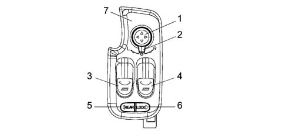
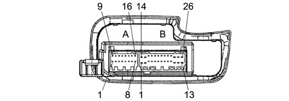
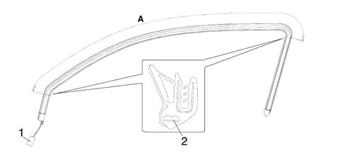
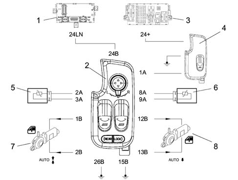
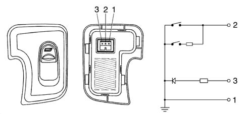
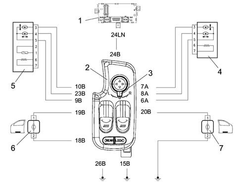
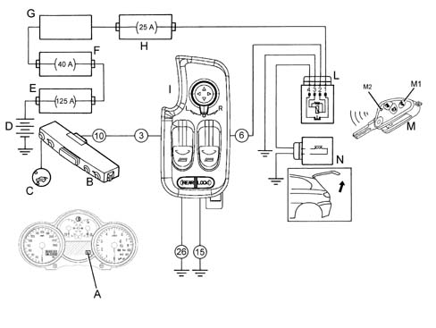

7005M front electric windows
- Path
- Descriptions > 70 FITTINGS > 7005 PASSENGER COMPARTMENT FRONT SIDE DOORS > 7005M front electric windows
- Kind
- system description
- Applies to
- all engines; all production periods
- Interactive page
- https://sloeber94.github.io/elrnDB-a147/en/#/3022540
Applies to: all engines; all production periods
COMPOSITION
COMPOSITION
The driver's door node (NPG) houses the following controls:

1 - Door mirror positioning knob 2 - L driver's side R passenger side electric mirror selector 3 - L window control button 4 - R window control button 5 - REAR window selection button 6 - Rear window LOCK button 7 - Panel
OPERATION
The Driver's Door Node performs the following functions:
- supports the functions described in the table;
- receives and sends information on the B-CAN line (e.g. diagnosis, warning lights, commands, data);
- interconnects with the driver's front door wiring
No. | Function | Mode |
|---|---|---|
F3 | power supply from key 2 discharge relay | D |
F40 | download +15 signal | C |
F89 | front puddle light shared power supply and timer L/R | C, D |
F91 | download front door open signal | C |
F99 | download boot opening control signal from remote control or facia switch and relay positive control for boot opening electromagnet (predisposition) | C, D |
F104 | power supply for front window motors with manual and automatic up/down and signal download from anticrush seals; transmit button status for roger-beep and to maintain key 2 discharge relay power supply | C, D |
F105 | control rear windows from driver's seat, transmit button status for roger-beep and to maintain key 2 discharge relay power supply | C |
F107 | inhibition of rear window control from driver's side from buttons on rear doors transmit button status for roger-beep | C |
F109 | download front window closure signal from recirculation control and iimplement raise | C, D |
F110 | download front window closure signal from pollution sensor and implement raise | C, D |
F111 | download front window closure signal from remote control and implement raise | C, D |
F112 | download front window closure signal from rain sensor | C, D |
F119 | manage door mirror deflector adjustment | D |
F122 | transmit outdoor temperature signal to activate automatic rear window demist, door mirrors and windscreen/rear window nozzles | C |
F181 | transmit outdoor temperature signal for climate control function | C |
F187 | transmit outdoor temperature signal signal for supplementary heater function | C |
F192 | download signal from outdoor temperature sensor and send value for display | C |
F218 | self-diagnosis on B-CAN line | C |
Rear view of connectors.

A - H44A 16 way B - H44B 26 way
Pin-out
CONNECTOR A
Conn. | Pin | Operation |
|---|---|---|
H44A | 1 | Control passenger side window from button |
H44A | 2 | Driver's side anticrush seal (S) |
H44A | 3 | Driver's side anticrush seal (-) |
H44A | 4 | Outdoor temperature sensor (S) |
H44A | 5 | Outdoor temperature sensor (-) |
H44A | 6 | Tail-gate release electromagnet relay positive control |
H44A | 7 | Free earth (connection with SB26) |
H44A | 8 | Passenger side anticrush seal (S) |
H44A | 9 | Passenger side anticrush seal (-) |
H44A | 10 | B-CAN B |
H44A | 11 | B-CAN A |
H44A | 12 | driver's door lock motor reduction unit control |
H44A | 13 | driver's door release motor reduction unit control |
H44A | 14 | earth for motor bar shunt (connection with SB25) |
H44A | 15 | NA (lock) motor bar signal Driver's door |
H44A | 16 | NC (release) motor bar signal Driver's door |
CONNECTOR B
Conn. | Pin | Function |
|---|---|---|
H44B | 1 | Lift guide window motor |
H44B | 2 | Lower guide window motor |
H44B | 3 | boot release control negative signal from button on PCC |
H44B | 4 | n.c. |
H44B | 5 | n.c. |
H44B | 6 | Passenger side electric mirror |
H44B | 7 | Passenger side L/R mirror actuation |
H44B | 8 | Passenger side high/low mirror actuation |
H44B | 9 | Shared - driver's electric mirror |
H44B | 10 | Driver's side L/R mirror actuation |
H44B | 11. | n.c. |
H44B | 12. | Passenger window motor lift |
H44B | 13 | Passenger window motor lower |
H44B | 14 | Power supply for services on driver's door from F-47 |
H44B | 15 | Driver's side power earth |
H44B | 16 | n.c. |
H44B | 17 | n.c. |
H44B | 18 | Earth for driver's side puddle light (connection with SB15) |
H44B | 19 | Driver's side puddle light timed power source positive (connection with SB20) |
H44B | 20 | Passenger side puddle lightt timed power source positive (connection with SB19) |
H44B | 21 | Driver's side electric mirror demister earth (connection with SB26) |
H44B | 22 | n.c. |
H44B | 23 | Driver's side high/low mirror actuation |
H44B | 24 | +30 from F-39 (electronic, puddle lights, boot release relay driver, door release) |
H44B | 25 | Power supply for services on passenger door from |
F-48 |
Electric front windows
Front windows with manual and automatic up, down controls and anticrush function
The system consists of driver and passenger side window controls on the doors; anticrush sheaths on the right front window and left front window plus two R and L window motors.
The control unit (NPG) controls operation of the driver and passenger side window motors.
The driver and passenger side window motors are controlled manually or automatically in accordance with a specific strategy.
Movement takes place with the ignition key ON and also with the key OFF.
(a) key on (k-on)
Movement takes place as described in the table
Driver's Side Front Window | Passenger Side Front Window | |
|---|---|---|
UP control | MANUAL movementAUTOMATIC movement | MANUAL movement |
DOWN control | MANUAL movementAUTOMATIC movement | MANUAL movementAUTOMATIC movement |
(b) key off (k-off)
Movement is only manual and timed by the NBC, which controls service relay 2 supplying the NPG and NVB nodes. Note that service relay 2 is located on the facia control unit (CPL) - T13 - is active with the ignition key ON and deactivated temporarily during start-up.
If an INT signal is not received from the ignition, the (NBC) maintains service relay 2 supplying the windows and sun roof active and changes the timing for 3 minutes ± 10% but deactivates it immediately when one of the two front doors is opened.
If a window control (front or rear) is pressed within three minutes of controlling service relay 2, the NBC resets the timer for a further 3 minutes.
Control buttons
Right window up/down (front and rear window control), unstable rocking type
Left window up/down (front and rear window control), unstable rocking type
Each time the window function control buttons are pressed, the buzzer in the NQS goes off as confirmation: changes of status from depressed/released (rocker buttons) must be supplied via the CAN network. The NQS is responsible for managing duration and tone and then implementing indications in the presence of simultaneous controls.
Manual system
Mode is manual when the user starts and stops the system by hand by means of the control buttons. The motor stops when the buttons are released.
Automatic system
Mode is automatic when movement is started by pressing the control button for a period in excess of a preset value. In automatic mode, window arrest (electric power to window motor cut off) is brought about by:
- the window reaching the upper or lower end of its travel
- the safety system (anticrush)
- once a new raise or lower control has been pressed.
This is regulated by controlling motor current, which must be self-adaptive, and by managing the anticrush sensor.
Disablement
Glass movement is disabled by:
- Vbatt = 16 V (re-enabled for Vbatt = 15.5 V)
- Vbatt = 10 V (re-enabled for Vbatt = 10.5 V)
The battery voltage level is supplied to the network by means of a specific message.
Activation with remote control
1) SUPERCLOSURE (only if the anticrush seal is present)
Door closure takes place when the lock button is pressed. When the button is depressed for more than 4 seconds, the windows begin to raise, the sunroof closes and the alarm (if present) is activated When the button is released, movement is suspended. The button must be pressed again for 4 seconds to resume movement.
2) SUPEROPENING
When the release button is pressed, the doors are opened and the courtesy light comes on simultaneously When the button is depressed for more than 4 seconds, the windows descent, the sun roof opens and the alarm (if present) is deactivated. When the button is released, movement is suspended. The button must be pressed again for 4 seconds to resume movement.
Driver's side window
The control unit should not operate when the control buttons are pressed for less than 60 ms.
Manual movement is activated if the control key is pressed for time: Ta = Activation time > 60 ms and < 300 ms (short control)
Automatic operation is activated if the control button is pressed for longer than: Ta > 300 ms (long control)
The window power supply is enabled with the key on and the battery supplying the control unit.
The control unit must cut off window operation in the following cases:
- at end of travel - either manual (within a time of 400 ms ± 50 ms) or automatic (within a time of 300 ms ± 30 ms);
- automatic arrest, after pressing the up or down control again.
Passenger side window
The passenger side window can be raised only manually. It can be lowered manually or automatically in the same way as described for the driver's side.
If controls issued simultaneously from driver and passenger side do not tally, no movement should take place.
Anticrush sensors on driver and passenger side window seals
These take the form of an electrical circuit in a sheath applied to the driver and passenger side upper seal. The control unit (NPG) interface contains two analogue inputs (signal and earth) with A/D (i.e. conversion from analogue to digital signal) for the microcontroller.
Roughly-speaking, these sensors are made up of a resistor with a value of 400 to 1800 ohms under normal conditions, i.e. when the glass does not compress the seal.
The NPG downloads information about the presence or absence of an obstacle when the window is closed (raised) via the anticrush seals.
Under these conditions, the resistance signal reaching the control unit must be between 0 and 400 ohms during manual or automatic operation.
As a consequence of this event, the control unit must immediately suspend window travel and immediately (max. 30 ms) reverse it for 400 ms.
Special software strategies are naturally also preset to handle changes in the electrical properties of the sensors due to wear, ageing etc.
When the stop is reached, all error conditions are reset under the following conditions:
- upper stop reached;
- upon a K-OFF, K-ON operation
- once the window has been lowered for at least 400 ms.
Safety sensor seal
The diagram below shows the safety sensor seal.

A - Area for fitting safety sensor 1 - Connector 2 - Safety sensor
To ensure a good level of safety whilst moving the window, the doors are fitted with window seals which have a safety function.
If there is an obstacle between the window and the seal, this function immediately interrupts the closing movements and reverses the operation of the motor to open the window.
The safety sensor is housed inside the profile of the seal along the entire length of section A, illustrated in the previous diagram.
Diagram showing front electric window
Wiring diagram

1 - Body computer node (NBC) 2 - Driver's door node (NPC) 3 - Facia control unit (CPL) 4 - Passenger side window control 5 - Driver's side anticrush seal 6 - Passenger side anticrush seal 7 - L front window motor 8 - R front window motor
Passenger side switch
Pin out.

1 - Earth 2 - Window up/down control negative signal 3 - Symbol lighting
Anomalous window operation
If the system malfunctions, the electronic control unit must activate the following procedure:
- if the engine power output wiring is broken, the control unit deactivates the relay within a maximum time of 500 ms during operation (only raising) for current values less than 0.8 A.
- upon KEY ON (ignition key inserted), with faults in the control buttons (short circuit or keys still depressed), control operation is inhibited until the defect disappears (or the key is released), for a time > 60 ms;
- if the buttons are pressed for longer than 12 seconds, motor operation is inhibited;
- if the down control button is short-circuitd or depressed for longer than 30 seconds, the control is inhibited so the window can be closed;
- if opposing keys are pressed simultaneously, no control takes place. Alternatively the down control takes precedence.
Because the download circuits are separate (right and left sides of the car), it must be possible to identify:
- seal wiring circuit open;
- seal wiring short circuit;
- short circuit to VB (wiring short circuited to Vbatt);
- short circuit to earth (wiring short-circuited to GND).
If one of the above situations occurs, the NPG emits an error status (FAIL) signal to the CAN network. Conversely, when the condition ceases, the NPG deletes the error status (FAIL).
When the control unit detects that the anticrush protection is not working properly, it takes the following action:
- does not permit automatic window raise;
- allows raising to take place in steps with manual operation (max. consecutive 200 ms of control);
- does not allow AUTO up and down operation (CLOSE/OPEN)
Electric rear windows go ahead and control
Electric rear windows control.
The rear windows (on 5 door versions only) may be controlled by the NPG once this mode has been selected using the 'REAR' button.
If the button is pressed, Boot Compartment Node (NVB) function is activated and the rear windows can be moved by operating the window switches on the Driver's Door Node (NPG).
If no movement is made, the selection returns automatically to the front windows 20 minutes after the last window movement (NPG).
Each time the rear windows are operated, the rear window selection maintenance time is reset. To make a visual check, when the rear windows are selected, a LED is activated which stays on throughout the selection on the NVB.
If the front part of the button is pressed, the Driver's DoorNode function is operated and the front windows can be moved by operating the window switches on the Driver's Door Node.
The function may be activated only if rear window inhibition status is not present.
Inhibition of rear window control from driver's side
The rear controls can be inhibited (protection) via a 'LOCK' rear movement button. The NPG downloads this switch and indicates the inhibition by means of an LED in the back of the switch and makes the status available to the network. The NVB does not allow the rear windows to be moved and turns off the control key lighting.
For more details 7010M rear electric windows
Managing front puddle lights
When the front doors are opened, the driver and passenger microswitches send a negative signal (earth) to the body computer node (NBC). This wakes up the CAN network and communicates door status to the driver's door node (NPG). The node controls activation of bulbs in the doors. The function is active with key-off or key on.
The connector is fitted with two independent outlets that are shared inside. These control the bulbs in the doors simultaneously.
When one of the front doors is opened, the bulbs come on for a maximum time of 3 minutes as a single event. Once the time has elapsed, the puddle lights may be relit only if one of the doors is re-opened.
Closure of both doors brings about immediate bulb deactivation.
If battery voltage is beneath a 10V threshold, the NPG must not control activation of the puddle lights.
Notification of front door opening
This function is acive only with the key ON
Negative signals (earth) from the door and boot open microswitches are sent to the Body Computer Node (NBC) which sends the CAN network input status to the driver's door node (NPG); the instrument panel node (NQS) manages activation of the warning light.
Release/opening from remote control and button on facia (f104)
The NPG receives a request to control boot opening via a remote control message or a negative control signal from a button on the central facia control panel.
Once the message has been received or button active status has been downloaded, the driver's door node (NPG) controls an external relay for 0.5 seconds ± 10% and opens the boot (the relay control is positive).
Each control button depression is followed by a confirmation beep n a buzzer in the instrument panel node (NQS). The CAN network indicates the rocker button status change from depressed to released. The instrument panel node (NQS) is responsible for managing buzzer duration and tone and when it should be activated in the presence of commands.
With the key ON, the control button determines boot opening when vehice speed is 0 km/h.
With the key in STOP position, the control button signal is downloaded as long as the CAN network is active: 3 minutes from k-off, when one of the doors is opened for 3 minutes.
Door mirrors
The doors mirrors are moved electrically and heated to demist.
This second function is managed by the NBC because the demisting coil is electrically connected to the heated rear window control relay.
Mirrors can be moved along the L/R axis and the up/down axis one at a time by means of a joystick and a selection slide with three stable statuses (L) left, central rest position and (R) right.
Movement is active with the key ON and maximum duration is 8 seconds.
Mirror movement is disabled by:
- Vbatt = 16 V (re-enabled for Vbatt = 15.5 V)
- Vbatt = 10 V (re-enabled for Vbatt = 10.5 V)
- Lack of INT signal (from CAN network)
The voltage level (charge status) is present on the CAN network.
Managing outdoor temperature
Temperature information is supplied to the network in degrees centigrade (° C). The value to be transmitted (every 500 msecis calculated by means of a special algorithm that takes into account a value downloaded (every 50 ms) from an NTC sensor on the door mirror and appropriately filtered.
The information in degrees celcius (° C) is precise to 0.5 ° C and is sent via the CAN network for nodes (NCL-NQS-NBC). These users are responsible for applying relevant heating effect strategies:
- NCL climate control strategies;
- NQS permanent value display;
- NBC automatic demist strategies
When the battery is disconnected and reconnected, the control unit is able to ensure the CAN network is supplied with the outdoor temperature reading. If the driver's door node (NPG) detects circuit open or short circuit status for 10 seconds, it communicates the anomaly to the users via a special signal.
Diagram showing puddle light door mirror deflectors
Wiring diagram

1 - Body computer node (NBC) 2 - Electric mirror positioning knob 3 - Electric mirror selector L (left driver's side), R (right passenger side) 4 - Driver's side mirror (pin 9 shared, pin 10 lh/rh mirror movement, pin 23 up/down mirror movement) 5 - Passenger side mirror (pin 6 shared, pin 7 lh/rh mirror movement, pin 8 up/down mirror movement) 6 - Driver's side left door puddle light 7 - Passenger side right door puddle light
Automatic demisting with low outdoor temperature
This function is similar to activation of the heated rear window by the user via a manual control, with the difference that activation takes place once only with key ON and engine running with outdoor temperature = 3° C. This function is inactive with an error on the line or outdoor temperature sensor.
The following are also present together with the rear window, i.e. connected electrically to its relay:
- demister screen-printed to the rear window;
- right and left door mirror demister;
- screen washer nozzle demister,
Permanent outdoor temperature display
The instrument panel node (NQS) receives outdoor temperature information from the driver's door node (NPG) in the form of a finite magnitude in degrees centigrade. The driver's door node in turn receives the temperature signal from a sensor located on the door mirror. The instrument panel node (NQS) is responsible for displaying the information. If the outdoor temperature sensor fails, the (NQS) replaces the temperature reading with flashing dashes but the '° C' or '°F' indication remains. once 5 seconds has elapse, the dashes stop flashing and stay on permanently. System operation returns to normal when the fault disappears.
Climate control strategies
In order to achieve a comfortable, satisfactory climate within the passenger compartment as quickly as possible, the system must be able to determine the outdoor environmental conditions and engine temperature at the time the system is activated.
In other words, if the system is activated at a time when the outdoor temperature is very low and the engine is cold, it must behave differently from other situations such as: outdoor temperature low and engine warm or, conversely, outdoor temperature high and engine cold. In order to implement the ideal operating strategy, the system must thus consider the outdoor temperature level at the time the vehicle is about to set off (i.e. when the key is turned ON) and also with the vehicle in motion, when the outdoor temperature read by the sensor could experience changes.
The system thus acts as follows; when the ignition key is turned from OFF to ON, the system electronic control unit detects blended air temperature:
- If blended air temperature is lower than 40 ° C, the system stores the outdoor air temperature value that the sensor is measuring.
- If blended air temperature is higher than 40 ° C, the system considers the outdoor temperature value stored before the key is turned OFF.
This occurs because, since the engine is warm, the system considers that the vehicle has stopped for a short time and environmental conditions are as before the halt.
The outdoor temperature value is again updated while the vehicle is in motion because the outdoor temperature sensor could be influenced under these conditions by temperature changes in the moving outside air.
The system then uses a speed signal from the CAN network. The signal is considered in relation to a threshold value of 0-30 km/h:
- If car speed does not exceed 30 km/h, the outdoor air temperature value is updated only if it is lower than the value stored previously when the key was turned ON.
- If car speed exceds 30 km/h for at least 1 minute, the outdoor temperature value replaces the previously stored value, whether it is lower or higher.
Supplementary functions of driver's door node (npg) with options fitted
The driver's door node (NPG) enables the following functions only with options packages fitted:
- front window closure from recirculation control;
- front window closure from pollution sensor;
- front window closure from remote control.
Window closure from recirculation control
The function is active with the ignition key ON, provided the electric window system is fitted with efficient anticrush seals. Briefly, when the driver's door node (NPG) receives recirculation status information from the climate control system (NCL) node via the CAN network, it controls activation of the electric window actuators. The control is implemented in sequence at 50 ms intervals in the following order:
- passenger window;
- driver's window
Closing wndows from pollution sensor
The function is active with the ignition key ON. The climate control system software is designed to activate recirculation mode if the air to be taken in to the vehicle passenger compartment is polluted. The climate control system node (NCL) sends a signal via the CAN network to indicate that recirculation is activated to the driver's door node (NPG) , which activates the front window central locking.
Closing windows from remote control unit
Because the body computer node (NBC) is responsible for managing central closure (AUTO CLOSE) and opening (AUTO OPEN) of the doors, it can also manage opening/closure of the front windows (as well as the electric sunroof and courtesy lights) where this function is available.
The remote control unit is equipped with three buttons marked lock, unlock, boot and takes the form of a sending unit built into the key grip. It is fitted with a radio stage (433.92 Mhz) with a range of 20 m.
When a button is pressed, a variable code controlled by a mathematical algorithm (rolling code) is sent to a receiver built into the body computer (NBC). This node comes with a wire aerial that emerges and runs into the facia wiring (the aerial plugs into the facia wiring harness by means of a connector and can therefore be changed).
The function is active with the ignition key off, provided the window system is equipped with an efficient anticrush seal.
DOOR CLOSURE (AUTO CLOSE) - LONG BLINK
When the lock button is pressed (single, short press) all the doors are locked and the alarm (if present) is activated.
When the button is depressed for longer than 4 seconds (long press), the wndows raise and the sun roof closes. The alarm, if present, is activated.
A long pressing action is also referred to as 'super closure'.
When the button is released, movement is suspended. Re-depress for 4 seconds to resume movement.
DOOR OPENING (AUTO OPEN) - DOUBLE SHORT BLINK
When the release button is pressed (single short press), all doors are released and the alarm (if present) is deactivated; the courtesy lights also come on for 15 seconds or until key on.
When the button is depressed for longer than 4 seconds (long press), the front windows go down, the sun-roof opens and the alarm, if present, is deactivated. A long press is also referred to as 'super opening' When the button is released, movement is suspended. Re-depress for 4 seconds to resume movement.
DIAGRAM SHOWING BOOT OPENING CONTROL VIA REMOTE CONTROL AND FACIA BUTTON

A - Instrument panel (NQS) boot open indicator display (warning light turned on via CAN from Body Computer) B - Central panel C - Boot opening button with built-in led D - Battery E - Fuse control unit on battery F70 F - Fuse control unit on engine bay F2 G - Facia control unit (NPL) on Body Computer (NBC) H - OPT fuse control unit beneath facia behind Body Computer (NBC) I - Driver's door node (NPG) L - Boot opening relay next to OPT control unit beneath facia M - Ignition key (remote control) M1 remote boot opening control button M2 led indicating dispatch of code to receiver (Body Computer) N - Boot opening electromagnet
BOOT RELEASE/OPENING FROM REMOTE CONTROL AND BUTTON ON FACIA
The body computer node receives a release request from a dedicated button on the radio remote control unit with key off and sends the driver's door node (NPG) the information required to activate the external opening control relay. Opening via a single, short press on the facia button is fully controlled by the node (NPG). No optical/acoustic boot opening warnings are given if the system is not combined with an alarm function.